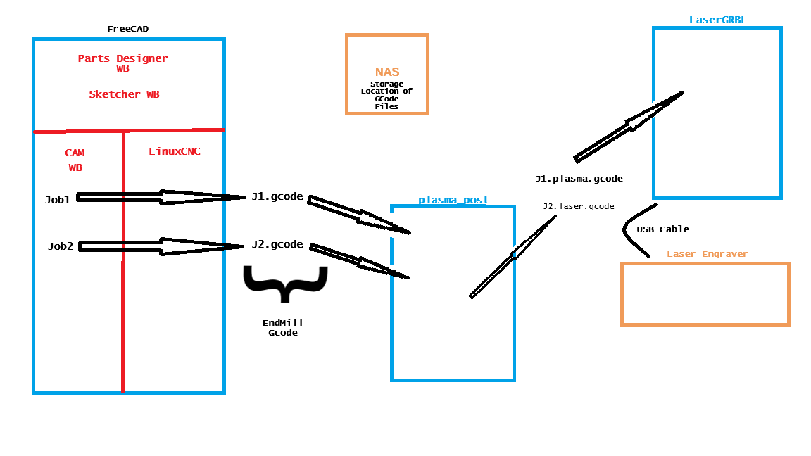
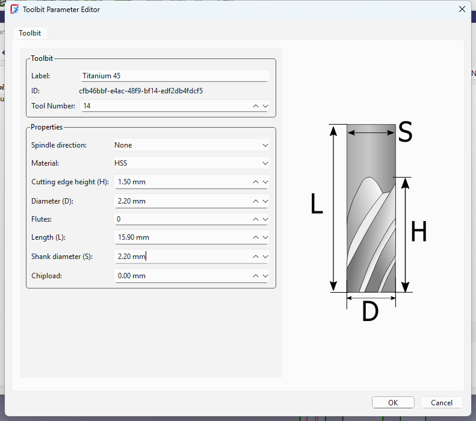
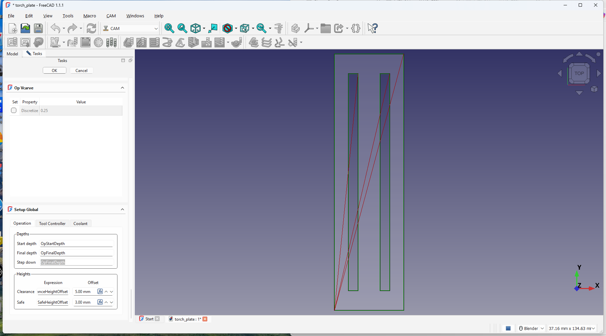

Here I have a capable desktop where I do my parts design using FreeCAD v1.1. I also use inkScape v1.4.4 when needed. In addition I have a NAS (Network Attached Storage) device on the network. This is where I store all my G-Code files. This way I can access the G-Code from the house and/or the shop.
Here I have an old Windows XP laptop running LaserGRBL v7.14.1. The XP laptop has .NET v4.0 installed. This is the last version offered by Microsoft. You can still find this update available on the internet. The plasma cutter I own is a Harbor Freight Titanium45. The laser engraver I bought was on sale. It's a Creality Falcon 10w laser engraver. LaserGRBL is the G-Code sender I use to send the G-Code instructions to the Falcon 10w.
I've watched several YouTube videos of people converting Laser Engravers into CNC plasma tables. However, I have yet to see a video that describes the whole process from beginning to end. You may want to watch my series of videos on my conversion. They are on YouTube and show all the mistakes I made. It involves connecting a SSR-25DD relay (output side) to the Titanium45's on/off switch inside the cabinet. Then connecting the VDC- ground and VDC+ PWM to the other side of the relay (input side). When LaserGRBL sends a M03 instruction, the Falcon 10w sends power down the PWM wire to the relay. This in turn causes the output side of the relay to be closed and the Titanium45 turns on. Later in the G-Code script, LaserGRBL sends the Falcon 10w a M05 instruction. This causes the Falcon to stop the power on the PWM wire and the relay switch opens shutting off the Titanium45.
On the parts design side, I use FreeCad. The "Parts Design" workbench is used to layout my part, usually a bracket of some type. I'm very new to FreeCAD and I'm the least qualified to give instructions on FreeCAD's use. There are excellent videos on YouTube on how to use FreeCAD. I will, however, make some observations that you may find helpful.


I don't think I'd want FreeCAD producing CNC plasma G-Code. The reason is that you'd constantly be modifying your model, adjusting the thickness (Z-Axis) of your model or part. I wrote "plasma_post" to read in the G-Code that linuxcnc produces and generate a new G-Code file. plasma_post will modify the G-Code adding the necessary codes needed to cut the part on a Laser Engraver or a CNC Plasma Table.
More free software. LaserGRBL is the gcode sender. I have an old HP laptop running WinXP and LaserGRBL in the shop. The laptop is connected via USB cable to the laser engraver. I open the gcode I created from the NAS (Network Attached Storage) and LaserGRBL sends it to the laser engraver.